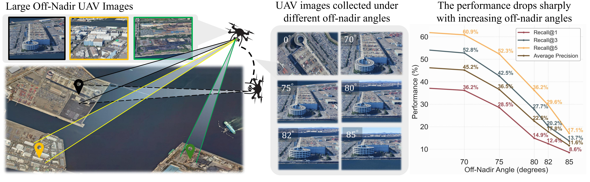
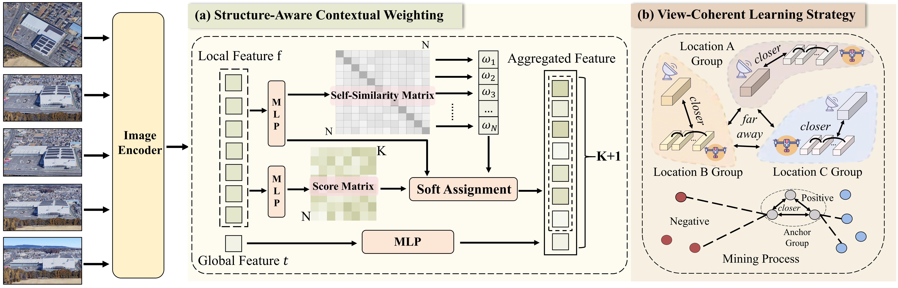

OffNadirLoc: Benchmark and Framework for Challenging UAV-to-Satellite Geo-Localization under Large Off-Nadir Views

OffNadirLoc benchmark overview.UAV images captured under large off-nadir angles exhibit severe perspective distortion, occlusion, and appearance shifts relative to nadir satellite views, forming a challenging setting for cross-view geo-localization.
Abstract
Cross-view geo-localization between UAV and satellite imagery remains a fundamental yet highly challenging task, especially under large off-nadir views where drastic perspective distortions, occlusions, and appearance gaps occur. Existing benchmarks and methods primarily focus on near-nadir scenarios and often overlook the importance of structural scene understanding and intra-domain relational constraints, limiting their performance in real-world deployments. In this work, we introduce OffNadirLoc, a new benchmark for large off-nadir UAV-to-satellite geo-localization.
To tackle the unique challenges posed by off-nadir perspectives, we further propose ONLoc, a framework that incorporates a structure-aware contextual weighting mechanism to dynamically emphasize reliable local features while suppressing ambiguous or repetitive regions. Additionally, we design a view-coherent learning strategy, which treats one satellite image and the corresponding UAV images from multiple views as a cohesive semantic group. This set-level supervision enables the model to learn viewpoint-invariant and discriminative features, making it more effective at capturing multi-view consistency than conventional pairwise contrastive learning. Extensive experiments on the OffNadirLoc benchmark and four near-nadir datasets demonstrate that our method consistently outperforms state-of-the-art approaches while exhibiting strong zero-shot generalization to unseen datasets without additional training.
Dataset

Method

BibTeX
@article{YourPaperKey2024,
title={Your Paper Title Here},
author={First Author and Second Author and Third Author},
journal={Conference/Journal Name},
year={2024},
url={https://your-domain.com/your-project-page}
}